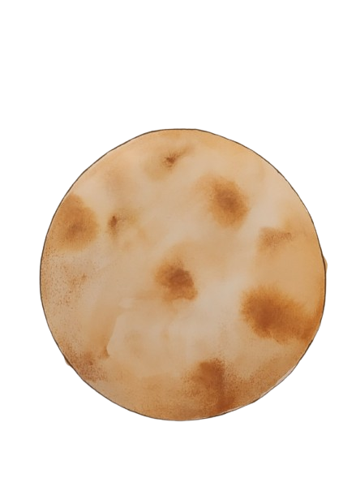
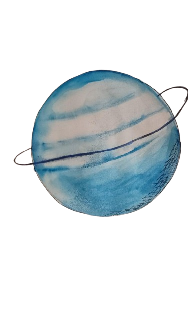

Заглавие
Слоган
описание

Меркурий
Тази планета е изцяло съставена от пица. Открий ястия, които са родени от нея!
Планетата Пица има тайна рецепта, която може да бъде открита само при посещение на нейните вулкани!

Планета Бургер
Тази планета е изцяло съставена от пица. Открий ястия, които са родени от нея!
Разгледай РецептатаВсеки бургер на тази планета е уникален и има космически вкус.

Планета Салата
Зеленчуци и свежи съставки, които ще ви накарат да се почувствате като на друга планета.
Разгледай РецептатаСалатите тук растат на дървета и са невероятно полезни за космическото здраве.